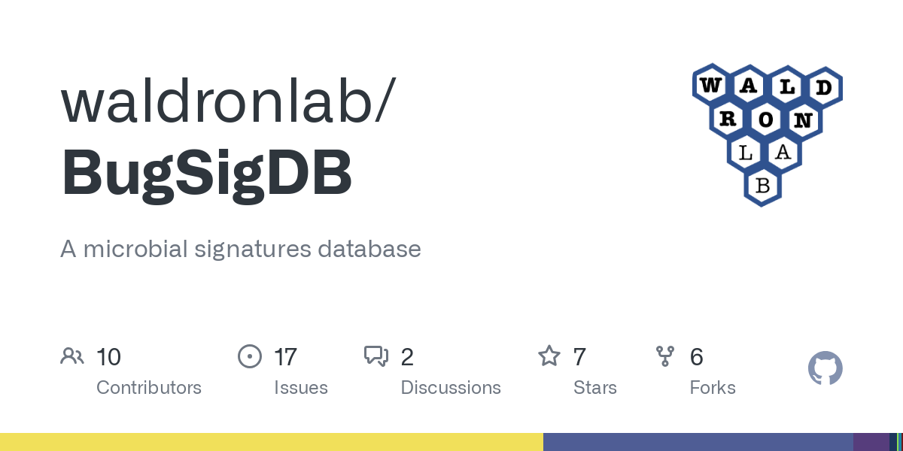

In this Project, I got the raw World Layoffs data and cleaned it using MySQL. I achieved this by removing duplicates, standardizing, removing/populating null or empty values and finally removing unneccesary rows and columns from the data.

Data Exploration of the World Layoffs data set using MySQL. For this project, I explored the total number of layoffs per industry, the country with the highest number of layoffs, the progression per month, etc.

My data visualization projects using tableau

My data visualization projects using PowerBI

All my open source contributions to the BugSigDB project. I contribute to this project by curating microbiome studies into the database, reviewing curated studies and fixing curation issues.

All my writing samples
MVIF consists of a group of scientists who are passionate about the microbiome.